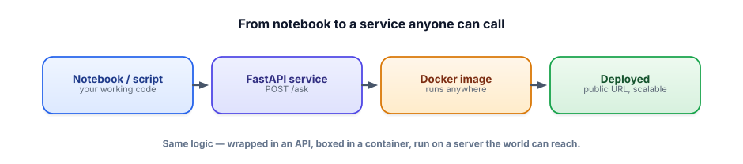

From notebook to a service
Code in a notebook only helps the person running it.
A web service is a program that waits for requests over the network and sends back answers.
Its address and the shape of each request together are called an API (application programming interface).
Wrap your model code in one, and any app, website or teammate can ask it a question.
In Python, FastAPI does this in about 15 lines.
Your notebook is like cooking dinner in your own kitchen: it works, but only you eat. A service is a restaurant with a counter and a menu. Customers do not walk into the kitchen; they order through the counter, and the menu says exactly what they can ask for.
| In the picture | In the real system |
|---|---|
| The kitchen where you cook | Your Python logic: RAG, an agent, a plain model call |
| The counter customers order at | The endpoint: a URL path such as POST /ask |
| The menu | The request schema (a pydantic model) that says which fields are allowed |
| Sending back an order that makes no sense | A 422 error for a bad request, before your code runs |
| The queue at the door | Requests in flight; you plan for peak load on purpose |
Where the picture breaks. A restaurant can see the queue at the door, but a web service only learns it is overloaded when requests start timing out, so you have to plan capacity on purpose.
question is turned away by the schema check with a 422, so the model is never called.Going deeper
A model call in a notebook helps exactly one person: you. To let anyone — a website, an app, a teammate — use it, you wrap it in a small web service. This lesson turns your working code into an API others can call.
Why an API is the unlock
Your capstone works in a Python file on your laptop. But a product isn’t a script someone has to run — it’s something other software can talk to over the network. A web service (or API) is a program that listens for requests and sends back responses. Wrapping your model logic in one means a front-end, a mobile app, or another service can send a question and get an answer, without knowing or caring about the Python inside. This single step — “put it behind an endpoint” — is what turns “I built a thing” into “others can use my thing,” and it’s the first thing an interviewer means by “productionize.”

A model service in ~15 lines
We’ll use FastAPI, the standard, beginner-friendly Python web framework for this. It’s free, and paired with a local model (Ollama) the whole thing costs nothing to run. The idea: define an endpoint — a URL path like /ask — and a function that runs when someone POSTs to it.
from fastapi import FastAPI
from pydantic import BaseModel
import ollama # your free, local model
app = FastAPI()
class Ask(BaseModel): # defines the shape of the request body
question: str
@app.post("/ask")
def ask(body: Ask):
reply = ollama.chat(model="qwen2.5:7b",
messages=[{"role": "user", "content": body.question}])
return {"answer": reply["message"]["content"]}Run it with uvicorn main:app --reload, and you have a live service. Anyone on your machine can now POST a question:
curl -X POST localhost:8000/ask \
-H "Content-Type: application/json" \
-d '{"question": "What is RAG in one sentence?"}'
# -> {"answer": "RAG retrieves relevant documents and ..."}Two beginner-friendly wins come for free with FastAPI: the Ask model (from pydantic) automatically validates incoming requests — a request missing question gets a clear 422 error, not a crash — and FastAPI auto-generates interactive docs at /docs so you can try your endpoint in the browser.
The body of ask() is just your capstone logic (RAG, an agent, text-to-SQL). Productionizing doesn’t change what your code does — it changes how it’s reached: from “run the script” to “call the endpoint.”
Assumptions (ours): 2,000,000 requests a day for an internal assistant, peak traffic 3x the daily average, and a mean model call of 4 s. Facts: FastAPI runs a plain def endpoint in an external threadpool (FastAPI docs), and AnyIO's default worker-thread limiter is 40 (AnyIO docs).
- Arrival rate. 2,000,000 / 86,400 s = 23.1 requests/s on average; peak 3x = 69.4 requests/s.
- Requests in flight. Little's law: 69.4 x 4 s = 278 concurrent requests, nearly all of them just waiting on the model.
- The sync trap. The 15-line example uses
def ask()with a blocking client. Each process then has about 40 threads to wait with. 4 uvicorn workers x 40 = 160 slots, fewer than 278, so requests queue inside your own server and p95 latency climbs even though the model is fine. - The fix. Make the endpoint
async defand use an async client (for Ollama,ollama.AsyncClient; most provider SDKs have one). Waiting on network I/O then costs almost nothing, and one process can hold hundreds of in-flight calls. Keep 2+ replicas for failover. - Protect the expensive part. Set a client timeout (say 30 s) so a stuck call frees its slot; add a per-user rate limit (say 60 requests a minute) so one script cannot eat the capacity of 278 users; cap request body size so nobody sends a 2 MB prompt.
- Know the upstream ceiling. 69 requests/s x 3,000 tokens = about 208,000 input tokens a second at peak. Check this against your provider's rate limits or your GPU throughput (Lesson 8.6) before launch, not after the first 429.
- Return enough to debug. Send a request ID back in every response and log it in the trace, so a user's complaint maps to one span tree.
- A web service (API) lets other software use your model logic over the network — the core of “productionize.”
- FastAPI wraps your code in endpoints (e.g.
POST /ask) in a handful of lines; run it with uvicorn. - pydantic models validate requests automatically (clear errors, not crashes);
/docsgives you a free test UI. - The endpoint body is just your existing logic — productionization changes access, not behavior.
- It stays free/local with Ollama; no keys or bills to stand it up.
Sketch how you’d turn your Track 14 RAG assistant into a service. What would the endpoint be, what fields would the request and response have, and what should happen if the request is missing the question?
▸ Show solution & reasoning
Endpoint: POST /ask. Request: a JSON body with question (string), optionally top_k (how many chunks to retrieve). Response: { "answer": "...", "sources": [...] } — returning the sources is your RAG grounding/citations coming through the API, so callers can verify. Missing question: a pydantic model with a required question field makes FastAPI reject it automatically with a 422 and a message naming the missing field — no crash, no ambiguous 500.
Why this shape: it exposes exactly what a caller needs (a question in, an answer plus sources out) and nothing about the internals (which vector store, which model). That clean contract is what lets you swap the implementation later — a bigger model, a different retriever — without breaking any caller. Returning sources also carries your grounding discipline all the way to the edge of the system, which is what makes the service trustworthy, not just functional.
What does wrapping your model code in a FastAPI endpoint fundamentally change?
What changes when you move from a notebook to a service?
Your FastAPI LLM endpoint uses a plain def handler and a blocking HTTP client. At peak you see requests waiting in your own server while the model provider shows low load. What is the most likely fix?
Once your logic is an endpoint, a few realities specific to LLM services show up quickly, and knowing them marks you as someone who’s shipped. First, latency is high and variable — a model call can take seconds, so you’ll often want asynchronous handling and streaming (Track 8): sending tokens as they’re generated so the user sees progress instead of a long blank wait.
FastAPI supports streaming responses, and it dramatically improves perceived speed. Second, these endpoints are expensive per call compared to a typical CRUD API, so timeouts, caching (Track 8), and per-user rate limits aren’t niceties — they’re how you avoid a surprise bill or an outage from one heavy user.
Third, and easy to forget: the endpoint is now an attack surface. Everything from Track 7 applies at the API boundary — validate and bound inputs, guard against prompt injection in whatever text you accept, never trust the client, and don’t leak internal errors in responses. A production LLM service is your model logic plus a ring of operational concerns — latency, cost, and safety — wrapped around it. The rest of this track is about building that ring: packaging it to run anywhere, gating changes with evals, and watching it in production.
labs/08_llmops.pyFree and offline once set up: Ollama with qwen2.5:7b, plus the packages in labs/README.md. From the course folder:
python labs/08_llmops.pyWhat to look for: The lab is not a web server, but it shows the operational ring this lesson ends on: each request becomes a traced span with timing and tokens, input and output guardrails run around the model call, and a cache sits in front of it. Read one JSONL trace line and map each field to where it would live in your FastAPI handler (request ID, latency, tokens, guardrail verdict). The lab does not show concurrency or async handling; use the Little's law arithmetic for that.
Small samples: these labs use 5 to 20 cases so they run in minutes on a laptop. Where they report a rate, they print n and a 95% Wilson interval. Read them as a demonstration of the mechanism, not as a measured rate for your system; for that you need hundreds of cases and several seeds.
▸ Recorded output (our run, 2026-11-03, qwen2.5:7b on a laptop GPU)
semantic similarity to the cached 'track my order': paraphrase=0.657 different intent (cancel)=0.523
semantic hits at threshold 0.9: 0
Look: a threshold low enough to catch the paraphrase would sit close to the wrong-intent score.
Serving 'how to track' to someone who asked 'how to cancel' is worse than a cache miss. Tune the
threshold on labelled pairs, scope caches per intent/tenant, and log every semantic hit for review.
traces written to traces.jsonl; first span:
{"trace_id": "54d669838c1f47758c9099aba0110b3f", "name": "chat qwen2.5:7b", "gen_ai.operation.name": "chat", "gen_ai.provider.name": "ollama", "gen_ai.request.model": "qwen2.5:7b", "gen_ai.prompt.name": "support_answer", "gen_ai.prompt.version": 2, "prompt.hash": "5ab3d11ffb3b", "user.id": "u-123",
4) Prompt version rollout: v1 vs v2 on the same question, both traced
v1 hash=47ed77f326d6 -> "Yes, you can return innerwear as long as it meets your retailer's return policy conditions, such as being unus"
v2 hash=5ab3d11ffb3b -> 'Please contact support for specific return policies on innerwear.'
Check the facts too: store policy (labs/data/kb.json, ret-01) says innerwear cannot be returned. Neither
prompt has retrieval, so any 'yes' is a hallucination; the version that defers to support is the safer one.
Look: the trace links every answer to an exact prompt hash and model, so a bad answer is debuggable,
and a rollout is a registry change you can roll back, not a code edit buried in a deploy.Your numbers will differ a little run to run. Full log: labs/outputs. Source: labs/08_llmops.py.
Warm-up. A service gets 30 requests/s at peak and each LLM call takes 6 s. How many requests are in flight, and how many sync worker processes would you need at 40 threads each?
▸ Solution
Little's law: 30 x 6 = 180 in flight. 180 / 40 = 4.5, so 5 processes, before any headroom. With async handlers one or two processes would do, which is why async is the default for LLM services.
Transfer. Extend the /ask endpoint contract for production. Which request and response fields would you add, and why each?
▸ Solution
Request: question (required, max length), optional conversation_id (so memory lives in a store, not the process), optional top_k with a bounded range. Response: answer, sources (doc IDs for grounding), request_id (to find the trace), model and prompt_version (what produced this answer), usage tokens (for cost attribution), and finish_reason (so the client knows a reply was cut off). Errors: 422 for bad input, 429 with Retry-After when rate limited, 503 with a request_id when the model is unavailable, and never a raw stack trace. Each field exists so a caller can trust, debug or pay for the answer.
Stretch. Users abandon requests after 10 s, but the model keeps generating for them. At 70 requests/s with 15% abandonment after 10 s and an average of 400 further output tokens per abandoned request at $10 per million, what does that waste cost a month, and how do you stop it?
▸ Solution
Abandoned: 70 x 0.15 = 10.5 requests/s. Waste: 10.5 x 400 = 4,200 output tokens/s, x 86,400 = 362.9M tokens/day (if peak held all day; scale to your real curve). At $10/M that is $3,629/day, about $109,000/month at that worst case. Fix: detect client disconnects (in FastAPI check request.is_disconnected() in the streaming loop, or rely on cancellation of the response task) and cancel the upstream call so generation stops; streaming also reduces abandonment because users see progress.
Junior How would you turn a Python function that calls an LLM into an API other teams can use?
▸ Model answer
Wrap it in a web framework like FastAPI. Define a pydantic model for the request body so bad input is rejected with a 422, a POST endpoint that runs the function, and a response model with the answer and any sources. Run it with uvicorn, check the auto-generated docs at /docs, and add a health endpoint. Config like model name comes from environment variables. For production I would make the handler async, add timeouts and a request ID in every response, and log each call as a trace.
Mid What is different about operating an LLM endpoint compared with a normal CRUD API?
▸ Model answer
Latency is seconds, not milliseconds, and it varies with output length, so concurrency planning and streaming matter. Each call costs real money, so rate limits, quotas and caching are financial controls, not just protection. Outputs are non-deterministic and can be wrong without an error, so I need evals and quality monitoring, not only status codes. The input is an attack surface for prompt injection. And there is an upstream dependency with its own rate limits and outages, so I need retries with backoff, timeouts and ideally a fallback model.
Senior Design the failure handling for an LLM service whose provider has a partial outage.
▸ Model answer
Detect it fast: alert on upstream error rate and p95 latency per provider and model. Contain it: timeouts per call, retries with jittered exponential backoff only on retryable errors, and a circuit breaker that stops hammering a failing upstream. Degrade gracefully: fail over to a second model or provider that has passed the same eval gate, serve cached answers for common questions, or return a clear 'try again' message with a request ID. Protect cost: retries count toward budgets. Afterwards, add the incident's traffic pattern to load tests and review whether the fallback model's quality was acceptable.
Your service runs on your laptop. To run it anywhere — reliably, the same every time — you package it. Next: containers and deployment.
In one line: A service puts a counter and a menu in front of your code, so other programs can order from it.